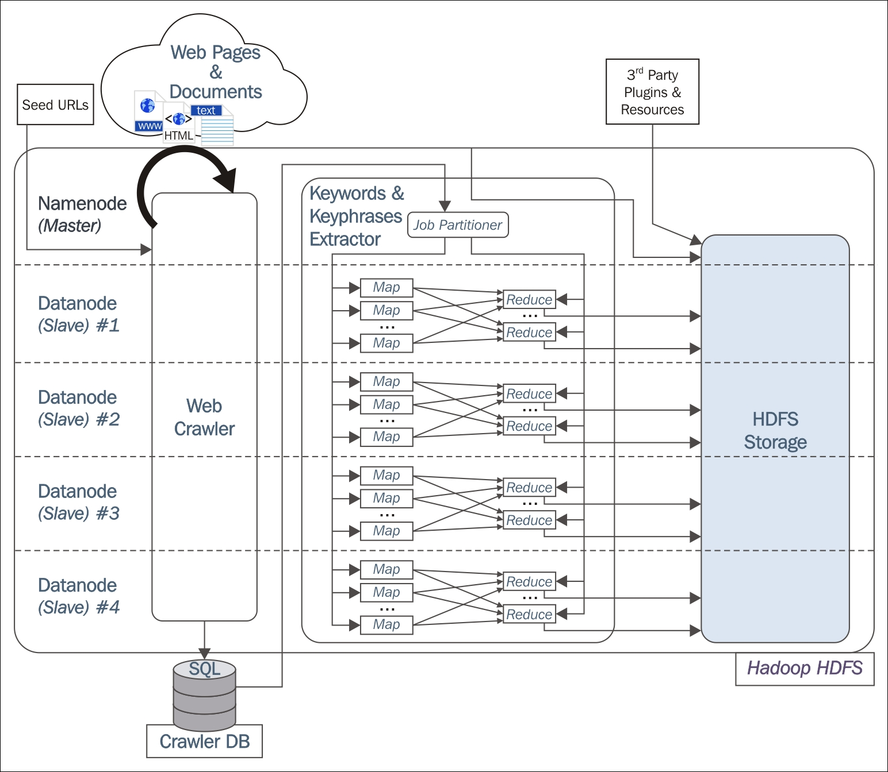

The exponential growth of information in the Web has increased the intensity of diffusion of large-scale unstructured natural language textual resources. Hence, in the last few years, the interest to extract, process, and share this information has increased substantially. Processing these sources of knowledge within a stipulated time frame has turned out to be a major challenge for various research and commercial industries. In this section, we will describe the process used to crawl the web documents, discover the information and run natural language processing in a distributed manner using Hadoop.
To design architecture for natural language processing (NLP), the first task to be performed is the extraction of annotated keywords and key phrases from the large-scale unstructured data. To perform the NLP on a distributed architecture, the Apache Hadoop framework can be chosen for its efficient and scalable solution, and also to improve the failure handling and data integrity. The large-scale web crawler can be set to extract all the unstructured data from the Web and write it in the Hadoop Distributed File System for further processing. To perform the particular NLP tasks, we can use the open source GATE application as shown in the paper [136]. An overview of the tentative design of a distributed natural language processing architecture is shown in Figure 7.2.
To distribute the working of the web crawler, map-reduce can be used and run across multiple nodes. The execution of the NLP tasks and also the writing of the final output is performed with Map-reduce. The whole architecture will depend on two input files i) the seedurls given for crawling a particular web page stored in seed_urls.txt and ii) the path location of the NLP application (such as where GATE is installed). The web crawler will take seedurls from the .txt file and run the crawler for those in parallel. Asynchronously, an extraction plugin searches the keywords and key phrases on the crawled web pages and executes independently along with the web pages crawled. At the last step, a dedicated program stores the extracted keywords and key phrases in an external SQL database or a NoSQL database such as Elasticsearch, as per the requirements. All these modules mentioned in the architecture are described in the following subsections.
To explain this phase, we won't go into a deep explanation, as it's almost out of the scope of this book. Web crawling has a few different phases. The first phase is the URL discovery stage, where the process takes each seed URL as the input of the seed_urls.txt file and navigates through the pagination URLs to discover relevant URLs. This phase defines the set of URLs that are going to be fetched in the next phase.
The next phase is fetching the page content of the URLs and saving in the disk. The operation is done segment-wise, where each segment will contain some predefined numbers of URLs. The operation will run in parallel on different DataNodes. The final outcome of the phases is stored in the Hadoop Distributed File System. The Keyword extractor will work on these saved page contents for the next phase.

Figure 7.2: The representation of how natural language processing is performed in Hadoop that is going to be fetched in the next phase. The next phase is fetching the page content of the URLs and saving in the disk. The operation is done segment wise, where each segment will contain some pre-defined numbers of URLs. The operation will run in parallel on different DataNodes. The final outcome of the phases is stored in Hadoop Distributed File System. The keyword extractor will work on these saved page contents for the next phase.
For the page content of each URL, a Document Object Model (DOM) is created and stored back in the HDFS. In the DOM, documents have a logical structure like a tree. Using DOM, one can write the xpath to collect the required keywords and phrases in the natural language processing phase. In this module, we will define the Map-reduce job for executing the natural language processing application for the next phase. The map function defined as a <key, value> pair key is the URL, and values are a corresponding DOM of the URL. The reduce function will perform the configuration and execution of the natural language processing part. The subsequent estimation of the extracted keywords and phrases at the web domain level will be performed in the reduce method. For this purpose, we can write a custom plugin to generate the rule files to perform various string manipulations to filter out the noisy, undesired words from the extracted texts. The rule files can be a JSON file or any other easy to load and interpret file based on the use case. Preferably, the common nouns and adjectives are identified as common keywords from the texts.
The paper [136] has presented a very important formulation to find the relevant keywords and key phrases from a web document. They have provided the Term Frequency - Inverse Document Frequency (TF-IDF) metric to estimate the relevant information from the whole corpus, composed of all the documents and pages that belong to a single web domain. Computing the value of TD-IDF and assigning it a threshold value for discarding other keywords allows us to generate the most relevant words from the corpus. In other words, it discards the common articles and conjunctions that might have a high frequency of occurrence in the text, but generally do not possess any meaningful information. The TF-IDF metric is basically the product of two functions, TF and IDF.
TF provides the frequency of each word in the corpus, that is, how many times a word is present in the corpus. Whereas IDF behaves as a balance term, showing higher values for terms having the lower frequency in the whole corpus.
Mathematically, the metric TF-IDF for a keyword or key phrase i in a document d contained in the document D is given by the following equation:
(TF-IDF)i = TFi . IDFi
Here TFi = fi/nd and IDFi = log Nd/Ni
Here fi is the frequency of the candidate keyword or key phrase i in the document d and nd is the total number of terms in the document d. In IDF, ND denotes the total number of documents present in the corpus D, whereas Ni denotes the number of documents in which the keyword or key phrase i is present.
Based on the use cases, one should define a generic threshold frequency for TF-IDF. For a keyword or key phrase i if the value of TF-IDF becomes higher than the threshold value, that keyword or key phrase is accepted as final as written directly to the HDFS. On the other hand, if the corresponding value is less than the threshold value, that keyword is dropped from the final collection. In that way, finally, all the desired keywords will be written to the HDFS.